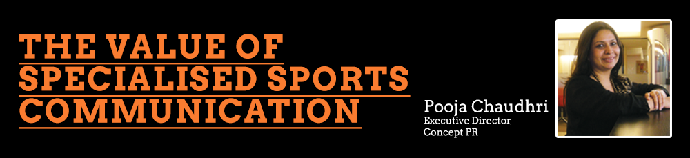

In the recent past, the Indian market has witnessed the rise of some of the world’s strongest sports brands. Alongside creative advertising and innovative marketing, intelligent and timely PR has helped transform these concepts into power brands that have generated enormous profits and taken the world by storm.
Until 2008, the word ‘league’ was relatively unknown to an average Indian, who connected it only to football leagues in Europe and the US. Quiz a ten-year-old today and he might give you more information about the Indian Premier League (IPL) than you ever knew! A body that was born thanks to an altercation between the BCCI and the lesser-known Indian Cricket League, is now the second highest-paid league, second only to the world famous National Basketball Association (NBA) that was founded in 1946. And as late as August of this year, we have seen the launch of two new leagues designed to cater to the Indian market; Elite Football League of India (American football) and the F1 Super Series (multi-country motorsport league).
Hardcore sports aficionados may argue that such made-for-TV sporting events cause over-exposure and burnout of players which could diminish their performance for the country and in fact get them to lose focus from the game altogether. Also, more often, to make it viewer-friendly the format of the game is tinkered with and the rules modified which may cause the game to lose its charm. But then shift your focus away from the pitch and look at the money that the sport is helping players, advertisers, broadcasters, sponsors and team owners earn. Then winning or losing seems to take second place!
Even though sports might still not have exclusive industry status, the country’s most powerful business houses seem to have understood the benefits of investing in Indian sports. A few months back, the Mukesh Ambani owned Reliance Industries Ltd (RIL), who also own IPL franchise-Mumbai Indians, got into a joint venture with IMG, a global sports marketing and management company to develop, market, and manage football, athletics, tennis and golf in India. Similarly, Vijay Mallya from the UB Group and Subroto Roy from the Sahara Group, are IPL franchisees who have also invested huge sums of money in sports as varied as horseracing, Formula 1 and football; hockey, shooting, archery and boxing respectively. Look at areas around each sport – broadcast rights, sponsorships, ticket sales, merchandising, and trading players and you’ll realize the game is bigger than you thought it was!
To make sure everyone who has invested funds gets back a hundred fold, each sporting event needs to be marketed well, in other words, be transformed into an extravaganza like no other. This is where sponsors nourish minds with sumptuous advertisements featuring their teams and products.
The power and value of public relations and allied services in the area of sports is often underestimated. Perhaps owing to the nature of its functioning which is pre-dominantly behind-the-scenes as compared to advertising which is often seen and remembered by the viewers. Having said that, the recent past has shown the value that specialized sports communications can bring on the table to build such brands. Here are some examples:
Indian Premier League (IPL)
When one talks about sports brands these days, you cannot but mention IPL. Started in 2008 IPL has become one of the most sought after sports brands and a marketing medium for brands looking to address the Indian audience. And the role played by PR and marketing innovation in its success has become a case study. Be it creating milestones and announcements and leveraging it in the media space (the player auctions were aired live!); the IPL Nights that took sports out of the sports page and so on & so forth. The true test however came during the 2009 season when the entire event was shifted to South Africa just 3 weeks before the scheduled start. The successful conduct of this event to a very large extent can be attributed to the media which was utilized very well to generate a positive and favourable opinion for the event. This included getting journalists to travel to South Africa and hosting them through the entire tournament.
Football
There is no denying that the popularity of football in India is perhaps at its highest today. This, despite the relative absence of any major Indian footballer in those leagues or any major connection with India. Clubs from the Barclays Premier League (popularly referred to as the English Premier League), La Liga (the Spanish league) and other leagues have a huge fan-following in India. So then, what is it that is driving the proliferation of the game in India? The answer to this question may lie in the various initiatives and innovative ways in which some of these clubs have gone about promoting their brands in India, most of which are activation led, particularly at the grassroots level. Some of the leading examples for such initiatives are:
- The Manchester United Soccer Schools Programme in Goa
- The Liverpool FC (England) Football Academies in Pune and Delhi
- The Mahindra Youth Football Challenge in association with Celtic FC (Scotland)
- The MoU between FC Dempo (India) and FC Midtjylland (Denmark) which would facilitate technical assistance for FC Dempo
None of these activities have utilized the traditional advertising route and have relied heavily on below-the-line activities and PR to spread the word.
Distance running
Traditionally, India has never been known as a hub for athletics or distance running. Yet, ironically enough India hosts three major long distance running events - Standard Chartered Mumbai Marathon, Airtel Delhi Half Marathon and TCS World 10K Bangalore – each of these being one of the largest (both in terms of prize money and participation) events in the world in their respective categories. International events of this stature are relatively new to India and come with their set of challenges and opportunities. From a communications perspective, these range from creating a buzz to keeping it alive till the event day, from media accreditation to arranging logistics (for the media), from managing celebrities and high-profile sports people throughout the event to physically managing the media on the race day. The fact that we have seen multiple editions of all these events without many glitches and the fact that each of these has become the definitive event of their respective cities, attracts the best running talent from across the globe and sees participation from the who’s-who of the city, gives us evidence enough about the value a good communication strategy can play.
Rugby India
Not many would be aware that the history between Rugby and India dates back to the late 19th Century during the British Raj and in fact the oldest trophy in circulation is the Calcutta Cup which was instituted in 1872. Like it is with most of non-cricket sports in India, Rugby too suffered from lack of popularity and funding which left very little scope for advertising or lavish events and activities. As a build-up, almost a year before the Delhi Commonwealth Games in October 2010, a well planned, concerted and innovative pure play PR campaign by our agency resulted in tickets for the Rugby matches at the games getting sold-out amongst all other sports disciplines. And this phenomenon was well captured by a newspaper headline – “Unknown but sold out!”
Conclusion
Today, we stand at a crucial juncture, as far as sports is concerned, the unprecedented attention that India is getting in the sports world is there for us to see. With global sports brands like F1 coming to India and the recently hosted Argentina-Venezuela football friendly matches in Kolkata, we could expect more sporting excitement to follow. At a different level, there are new sports coming to India with a spate of new properties like the first ever American-style football league called the Elite Football League of India. All of these factors should be enough evidence to prove that the role of specialized sports communication is critical. Other than positively impacting the success of sports, it is encouraging the emergence of a healthy sports culture in India.